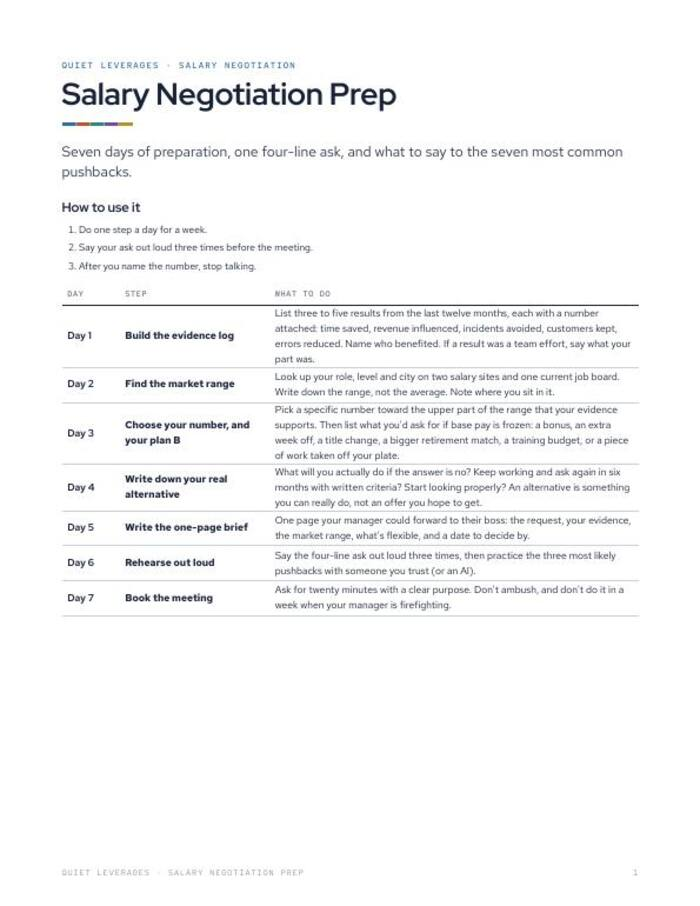
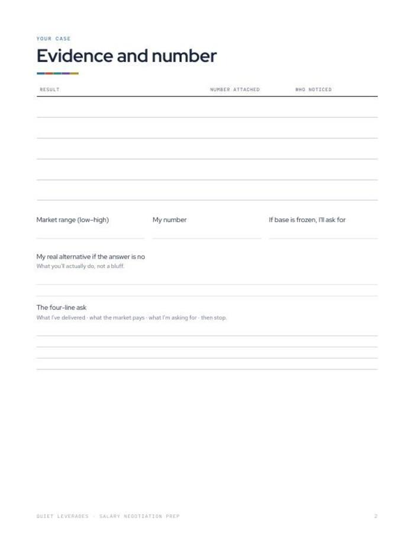
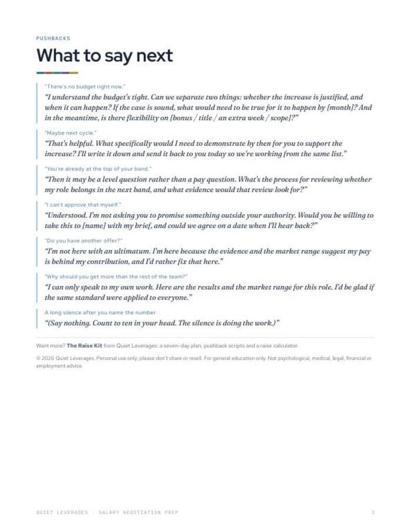
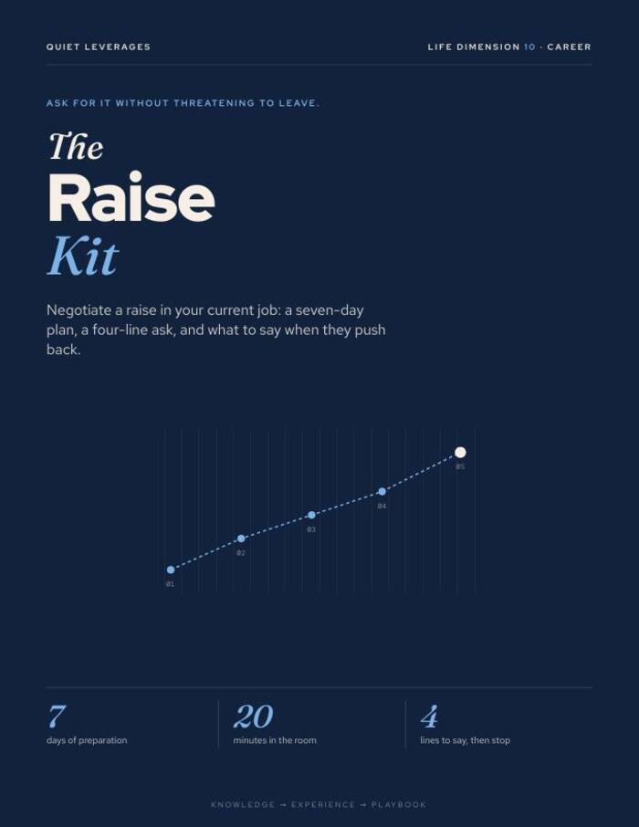
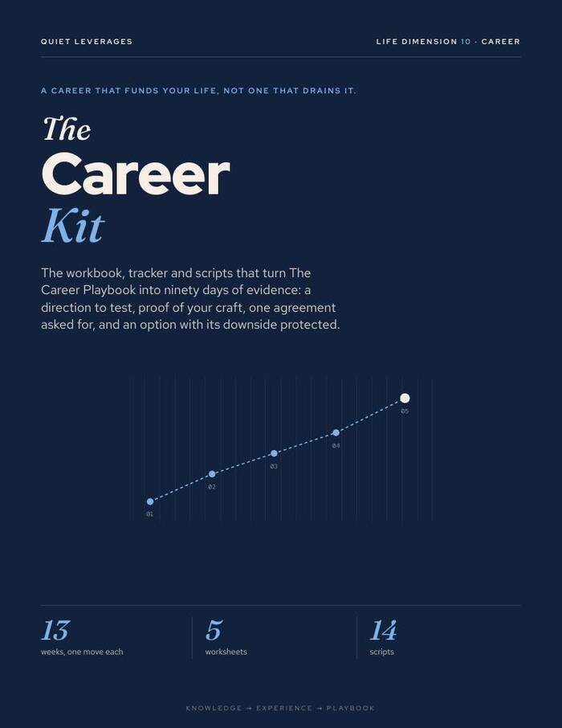
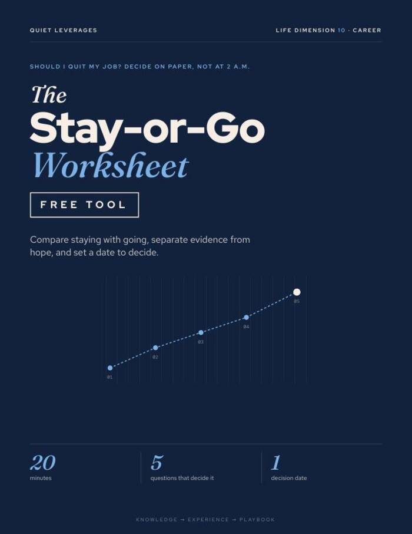

You have worked out you are underpaid. Now you need the number and what to say next.
A seven-day plan to prepare for a raise conversation, with a four-line ask and calm responses to the seven most common pushbacks.
Printable PDF. 3 pages. Print it or fill it in on a tablet. Instant download.

Seven days, one step a day
Evidence, market range, your number, your real alternative, a one-page brief, rehearsal, the meeting.
A four-line ask
What you have delivered, what the market pays, what you are asking for, then stop.
Seven pushbacks answered
Calm lines for 'no budget right now', 'maybe next cycle' and five more.
day prep plan
pushbacks with calm responses
page brief
Searches for how to negotiate a salary increase in a current job rose 850% in the US, Jan-Sep 2026 against 2025.
Google Trends, US, Jan-Sep 2026 vs 2025What changes after you fill it in
Evidence before the ask
Three to five results with numbers, written down before you say a word.
A number and a plan B
A specific number, and what you would want instead if base pay is frozen.
A script you have said out loud
Practise the ask three times before the meeting.
Replies ready for the hard moments
Seven pushbacks, each with a response that stays calm.
Everything in the download
- 7-day prep plan. Evidence, market range, your number or plan B, your real alternative, a one-page brief, rehearsal, book the meeting.
- Worksheet. Your evidence and the four-line ask.
- Seven pushbacks. Calm responses for each.
- Printable PDF. 3 pages, US Letter, prints on A4 at fit to page.


One step a day, then the meeting
Days 1 to 3
Build the evidence log, find the market range, choose your number.
Days 4 and 5
Write down your real alternative and a one-page brief.
Days 6 and 7
Rehearse the ask out loud, then book a twenty-minute meeting.
A good fit if you plan to ask in your current job
Use this if
- You have a result or two with numbers and have not yet asked.
- You want a script and answers to the usual pushbacks.
- You would rather prepare on paper than improvise.
Skip it if
- You want the full kit with a Google Sheet, career-value calculator and recap email. See The Raise Kit.
- You are negotiating a new job offer. This is written for a raise in your current role.
- You want legal or contract advice. This is a preparation plan.
Why preparation matters
of workers say they stay in their job out of fear and economic uncertainty.
Monster, Oct 2025of managers were engaged in 2025, down from 31% in 2022.
Gallup, 2026median from starting a job search to a first offer..
Huntr, Q1 2026What readers say about Salary Negotiation Prep
Prepare for the conversation in a week
A seven-day plan, the four-line ask and seven pushbacks, in three printed pages.
- 7-day prep plan
- Worksheet for evidence and the four-line ask
- Seven pushbacks with calm responses
Before you decide
How long does it take?
Seven days, one step a day. Most steps take a short sitting. Do not book the meeting until Day 7.
Who is it for?
Anyone planning to ask for more pay in their current job.
Will it tell me what number to ask for?
It walks you through finding the market range and choosing your number. The figure itself is yours to decide.
What if my manager says no?
Day 3 has you write a plan B for when base pay is frozen, such as a bonus, a title change or a training budget. The pushbacks page also covers common objections.
Can I print it or use it on a tablet?
Yes. It is a PDF, so any PDF app works. It prints on US Letter or on A4 at fit to page.
Is this employment or legal advice?
No. General education, not employment or legal advice.
The next step after this one

The Raise Kit
Seven days of preparation, one four-line ask, and what to say to every pushback.

The Career Kit
Thirteen weeks, one move a week. A career that funds your life instead of draining it.

The Stay-or-Go Worksheet
Should I quit my job? Decide on paper, not at 2 a.m.
Know your number before you book the meeting.
Seven days, one step a day.
Get it for $12Instant download on Gumroad.